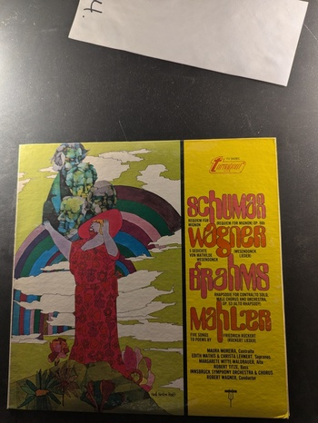
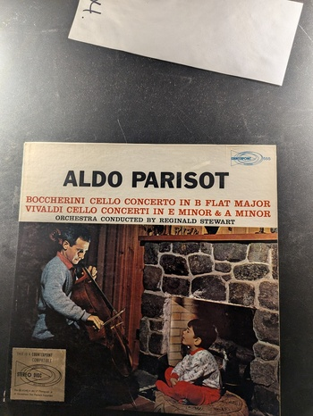

Cello Concerto in A Minor
Gaspar Cassado, Bamberg Symphony, Jonel Perlea
Vox PL 10.210
Schumann, Wagner, Brahms, Mahler
Maura Moreira, Edith Mathis, Christa Lennert, Margarete Witte-Waldbauer, Robert Titz, Innsbruck Symphony Orchestra & Chorus, Robert Wagner
Turnabout Vox TV 34281
Haydn String Quartets
Allegri String Quartet
Westminster WST-17111
Funeral and Triumphal Symphony, Opus 15
Berlioz
Urania US 5100
Missa Papae Marcelli
Giovanni Palestrina
Westminster W-9405
Two Violin Concertos
Yehudi Menuhin
Angel S-36520
Symphony No. 3 'Rhenish' / 'Manfred' Overture
Robert Schumann
Deutsche Grammophon 2535 116
Symphony No. 5, Op. 47
Shostakovich
Parliament PLP(S)-168
Symphony No. 13
Shostakovitch
Angel Records S 3181
Boccherini Cello Concerto in B Flat Major / Vivaldi Cello Concerti in E Minor & A Minor
Aldo Parisot
Counterpoint CPT 555
Suites for Orchestra 1 and 2, Vol. 1
Karl Ristenpart conducting the Orchestra of the Sarre
Counterpoint/Esoteric
Also Sprach Zarathustra, Op. 30
Strauss, Reiner/Chicago Symphony
RCA Victrola VICS-1265
New Music of Charles Ives: Seventeen First Recordings
Charles Ives
Columbia Masterworks M 30544
Divertimento for String Orchestra / Music for Strings, Percussion & Celesta
Bartok
Counterpoint / Esoteric 5601
Liszt: Concertos Nos. 1 and 2
Philippe Entremont
Columbia Masterworks MS 6657
Bruckner Symphony No. 6 in A
Klemperer, The New Philharmonia
Angel 36271
Symphony No.2 in B Minor / Romeo and Juliet
Borodin / Tchaikovsky
Heliodor HS 25061

Picnic Suite
Jean-Pierre Rampal / Alexandre Lagoya / Claude Bolling
CBS Masterworks M 35103
Bruckner: Symphonie Nr. 9 D-Moll
Berliner Philharmoniker, Herbert von Karajan
Deutsche Grammophon 139011
Symphonie Nr. 2
Anton Bruckner, Eugen Jochum
Deutsche Grammophon 139 132 SLPM
Alkan
Unknown
Candide CE 31045
Dante Symphony
Liszt
Melodiya/Angel SR-40133
Symphony No. 3 and Vocalise
Ormandy conducts Rachmaninoff, The Philadelphia Orchestra
Columbia Masterworks MS 7001
Borodin: Symphony No. 1 in E Flat / Rachmaninoff: The Rock (Symphonic Fantasy)
Gennady Rozhdestvensky conducting The Moscow Radio Symphony Orchestra
Melodiya / Angel SR-40162
Beethoven: The 'Triple' Concerto in C
David Oistrakh, Mstislav Rostropovich, Sviatoslav Richter, Herbert von Karajan
Angel S-36757
{kind=link}
{kind=link}
{kind=link}
{kind=link}
{kind=link}
{kind=link}
{kind=link}
{kind=link}
{kind=link}
{kind=link}
{kind=link}
{kind=link}
{kind=link}
{kind=link}
{kind=link}
{kind=link}
{kind=link}

{kind=link}
{kind=link}
{kind=link}
{kind=link}
{kind=link}
{kind=link}
{kind=link}